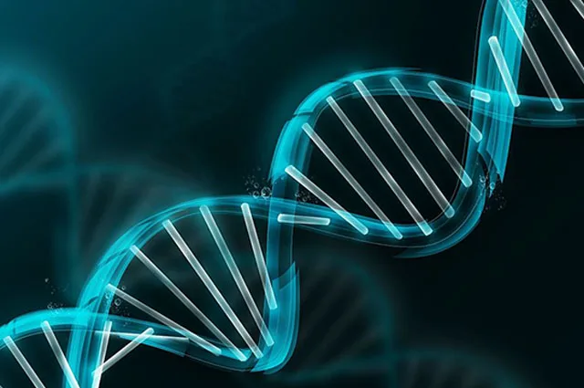

Los 5 avances más increibles de la ciencia y tecnologia
1.Diseñar nuevas proteínas
El bioquímico David Baker, de la Universidad de Washington y del Instituto Médico Howard Hughes, EE. UU., fue premiado por desarrollar una tecnología que permite diseñar proteínas que nunca antes se han visto en la naturaleza. Esta herramienta permitirá que los investigadores puedan crear nuevas proteínas que ayuden a combatir enfermedades, tal vez capaces de neutralizar la covid-19, reveló la Fundación Breakthrough Prize.2.El ADN de un feto
Yuk Ming Dennis Lo, de la Universidad China de Hong Kong, recibió el premio Breakthrough por descubrir que el ADN del feto está presente en la sangre materna y que, además, la sangre fetal puede usarse para comprobar posibles trastornos genéticos en el feto.
3. Misterios de la energía oscura
El trabajo de los físicos Eric Adelberger, Jens H. Gundlach y Blayne Heckel, de la Universidad de Washington, EE.UU., fue premiado por crear unos instrumentos extremadamente precisos para desentrañar misterios sobre la gravedad y la energía oscura. Gracias a ellos se podrán poner a prueba algunas teorías de Einstein.4.Burbujas de “Fermi”
La física de partículas Tracy Slatyer, conocida por su trabajo "cazando" materia oscura en nuestra galaxia, recibió el premio por sus contribuciones a la astrofísica de partículas.5.Las matemáticas más difíciles
En la categoría de matemáticas, Martin Hairer, del Imperial College de Londres, Reino Unido, recibió el Breakthrough por sus estudios en las ecuaciones diferenciales parciales estocásticas. Y sí, es tan complicado como suena.Los descubrimientos científicos del siglo XXI más importantes
No todos los descubrimientos científicos del siglo XXI más importantes han visto la luz de la sociedad. Muchos de ellos siguen siendo objeto de estudio por parte de los investigadores que los han creado. Pero a pesar de que sus aplicaciones fuera de sus campos se están investigando, si hay algo que está claro, es que la física, la ciencia y la neurociencia nunca volverán a ser iguales. Hacemos un repaso por los principales logros científicos que generaciones futuras estudiarán en los libros de texto por haber supuesto un cambio en el curso de la historia.
El homínido más antiguo, hallado
Es hembra, pesa alrededor de 50 kilogramos y mide unos 120 centímetros de altura. Se trata de Ardi, el antepasado más antiguo del ser humano que se halló en Etiopía en 1992 y presentado en sociedad 17 años después. El 1 de octubre de 2009, en una edición especial de Science, un equipo internacional de científicos describía minuciosamente, por primera vez, a Ardipithecus ramidus, una especie homínida que vivió hace 4,4 millones de años en lo que hoy es Etiopía. De esta manera, Ardi destronaba a Lucy, esqueleto parcial femenino de Australopithecus afarensis, hallado en 1974, que vivió hace 3,2 millones de años y que suponía el resto más antiguo descubierto hasta la fecha. Este hallazgo es considerado uno de los descubrimientos científicos del siglo XXI más importantes en el área de la arqueología y la antropología.
Hallan agua en Marte
El 19 de junio de 2008, la NASA confirmaba uno de los mayores logros científicos de la misión espacial: el planeta Marte albergaba agua. Hacía muchos años que los científicos estaban convencidos de ello, y es que así lo determinaban multitud de estudios previos, pero faltaba la prueba física. Y esta llegó gracias a la sonda Phoenix. Este vehículo explorador, lanzado el 4 de agosto de 2007, cerraba el círculo encontrando hielo cerca del Polo Norte marciano.